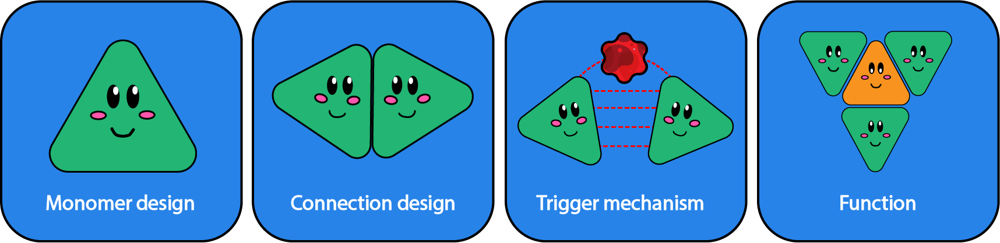

Self-organizing swarm robots communicate each other to perform tasks as a group. Here
we made nano-meter scale swarm robots using DNA origami, forming network between
individual robots. Upon environmental signal recognition (e.g. protein), individual robots
activate the connection module and form multimer complex. Our nano-meter scale swarm
robots may be applicable into therapeutics where the robots autonomously detect the
wound location and can cover the wound, providing medicines through programmable
manner.
In this project, we took the idea of swarm nanorobots and try to translate it to nanoscale through the use of DNA origami. DNA origami has been one of the materials used in developing nanostructures due to the ease of manipulation and the ability of self-folding.
In principle, the concept is similar to DNA tiles in which the assembly of polymer gets achieved through basic interactions and not top-down assembly of individual structures. However, this project tries to combine different disciplines by integrating conformation switching aptamers and possibly logic gates to control the actions of the nanorobots depending on the environment.
Potential applications
This nanorobot has the potential to serve as diagnostic and therapeutic devices. If the experiments and designs succeed to amplify a ligand mediated activation to a visible signal, it means that it might be able to replace other methods of ligand detection. Furthermore, its application as a diagnostic device is not confined to only a type of ligand, but many different classes of ligands such as inorganic, organic molecules and proteins. In addition to that, one robot might be able to identify more than one ligand at a time and can possibly show different observation.
Flow of idea and goals
The goals of this project are to establish important features that are needed to form a functioning swarm robotic system. The main goals are the first three below: to establish monomer design, connection design, and trigger mechanism and that function is a feature that we are looking for in the future as a supplement to the swarm robots.

Monomer design: Monomers act as individual nanorobots. The goal is to establish a simple, yet modifiable monomers that are stable.
Connection design: Connection was designed to create link between individual monomers. The goal is to design a connection mechanism that can connect monomers strongly.
Trigger mechanism: Mechanism needed to trigger the nanorobots on and off, to gather or to not gather. The goal is to have a mechanism that is reversible and responds to external stimuli such as proteins.
Modifications to add functions: In the future, we are looking at modifications to add function to the nanorobot network. This is out of this project's scope, however it is possible to attach structures such as channels that can control movement of substance in and out of target location.